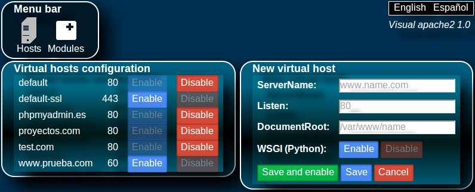

It is a web application to configure the apache2 server.
Screenshot

The configuration of apache2 is based on plane text files. You
need to know and remember the directives that tell apache2 what
you want it does. When you write manually on the configuration
files, you could do mistakes as typographical errors, syntax
errors, etc.
Visual apache2 provides a graphical user interface (web based)
to configure apache2 easily.
Visual apache2 is cross-platform as it is made as a web
application. It works in any operative system that can run the
apache2 server and php. The client (it could be server itself or
other computer in the network) needs to support html5.